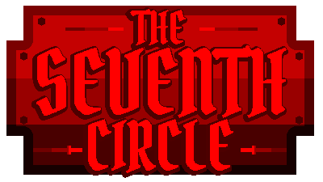
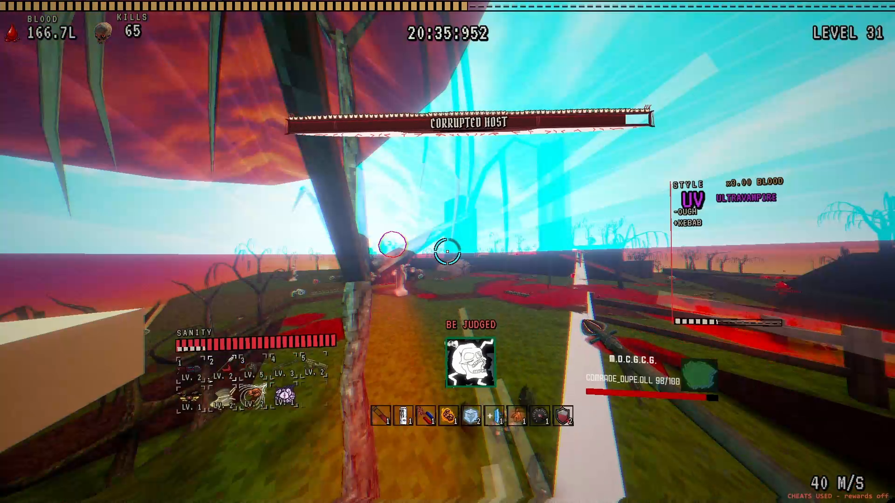
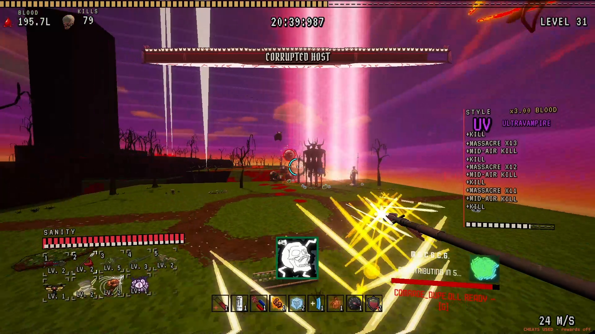
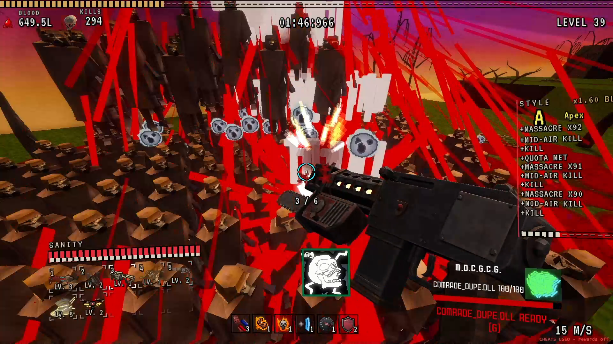
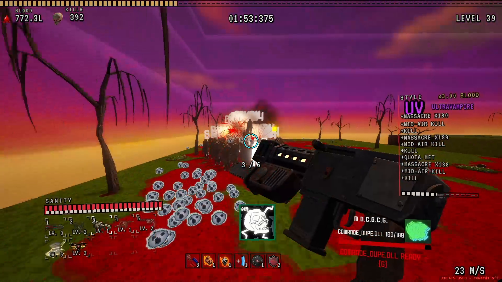
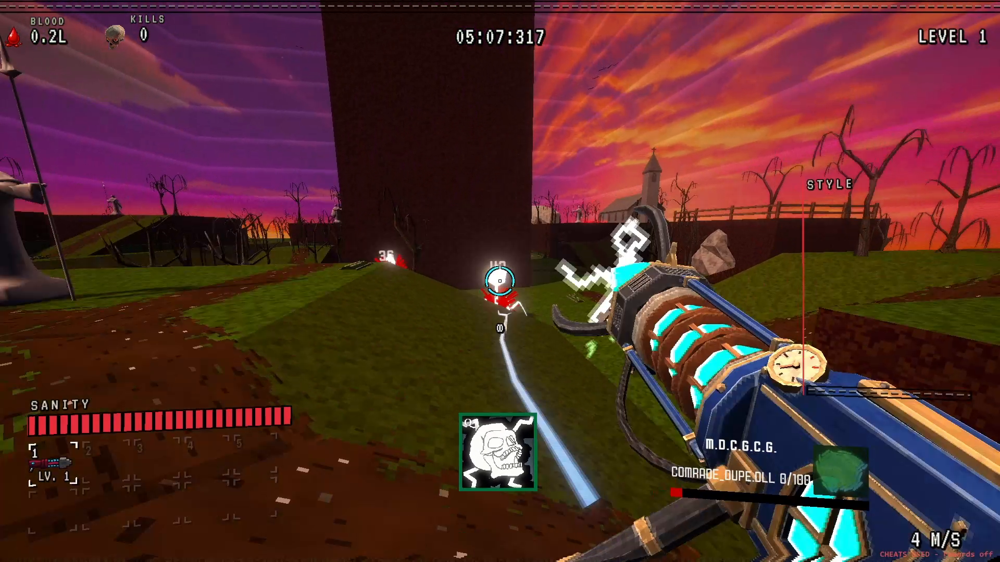
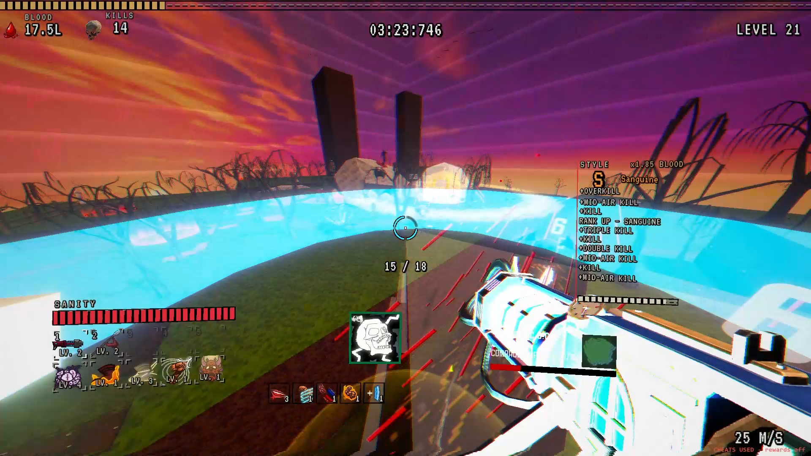
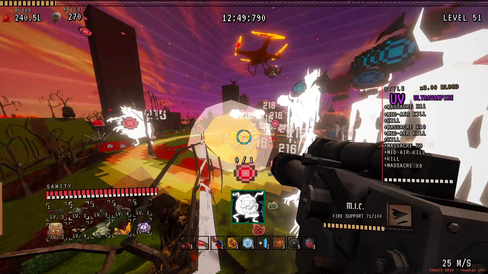
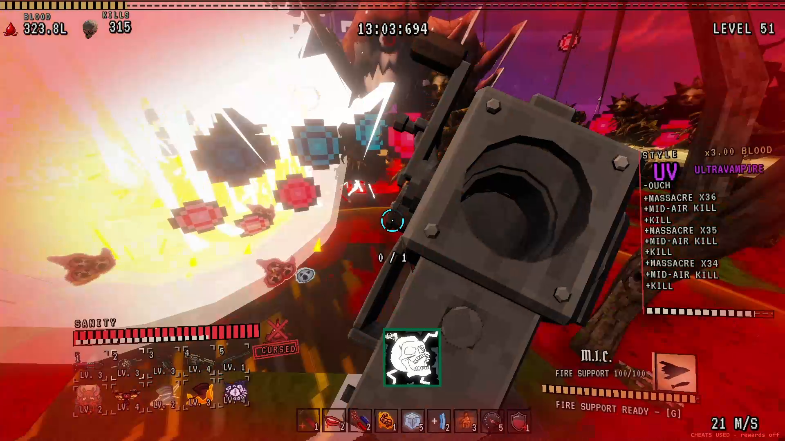

A retro movement shooter roguelike. Smash through the hordes of hell in search of a wish.
Play the free demo on Steam Download assetsThe Seventh Circle is a first-person roguelike where boomer-shooter movement meets bullet-heaven hordes. You pick a champion, sign a pact with a patron god, and dash, slide and wall-jump through 100 to 200 demons at a time while your build fires on its own.
Every run you collect weapons and passives, evolve them, and pay for everything in blood: it heals you, buys upgrades and gambles at chests. Each patron god sponsors you with passives, curses and castable miracles, from the Military Industrial Complex to Atheism. All of it in a pixel-crunched, gothic PS1-style hell.
Short version: Ultrakill movement meets Vampire Survivors hordes, in a PS1 hell.
1920x1080 PNG, click to open full size.








logo.png (400x225, transparent) · logo_1600x900.png (pixel-scaled 4x)
You are welcome to stream, record and monetize videos of The Seventh Circle. No permission needed. If you make something, send me the link: I watch everything and share what I can.
Inat Studio is Petar Stevović, a solo developer from Belgrade making games in Unity since 2022. He has won first place at two game jams (Pulsar, Engage Gamejam 2026; Petals of Madness, OpenIT gamejam). The Seventh Circle is the studio's first commercial game.